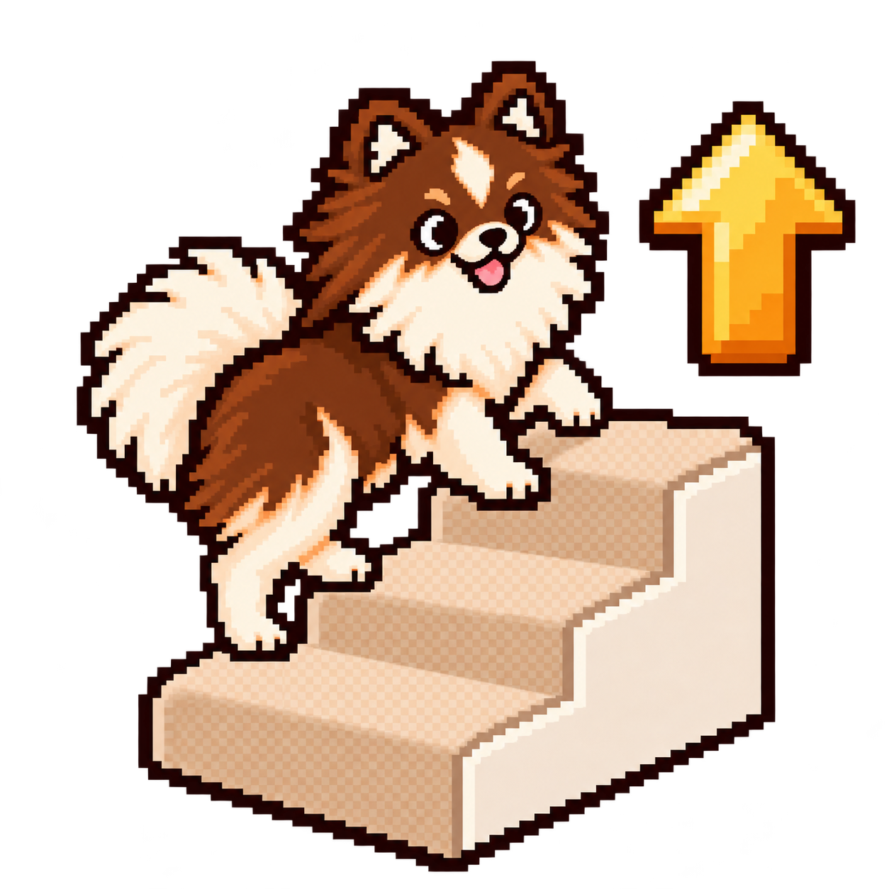
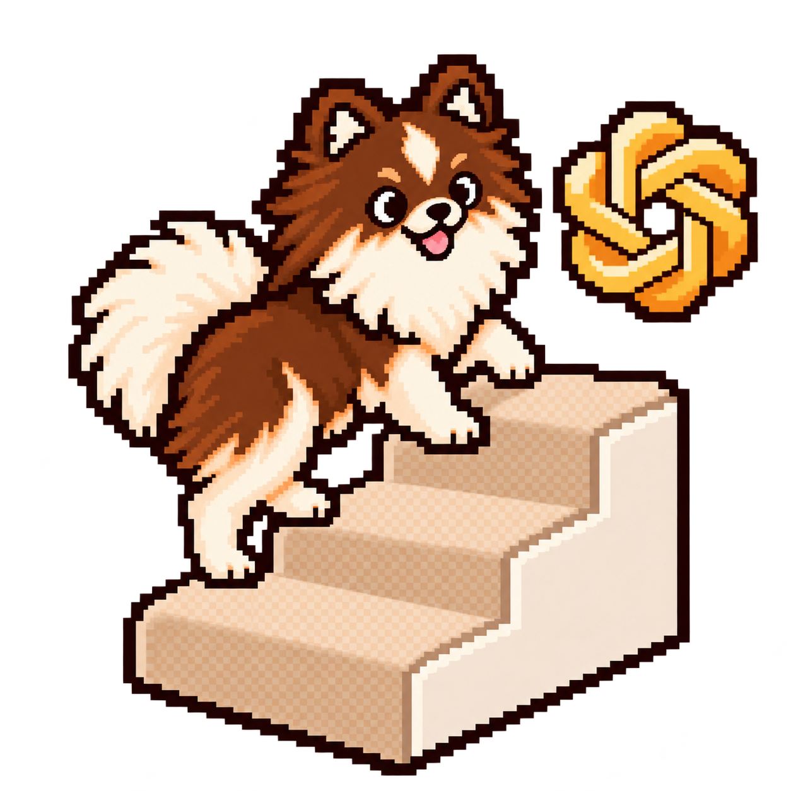

Router
develop
Select the owner below, or invoke a skill directly.
Eight skills. One coordinator.
Start with your outcome; follow the steps it needs.
Select the owner below, or invoke a skill directly.
Explicit only: develop can select deep-clean for wider cleanup;
upgrade-codex requires its own explicit invocation.

upgradeDependencies and runtime migration plan.
Implement, review, debug,
validate, publish and monitor.
Bounded files and objective.
Preserve code/docs contracts and performance.
May delegate to a specialist inside Iterate.
↩ Patch, tests and limits return for integration + full checks.
Existing review and handoff gates apply. No ninth skill.
Selected-session learning and recommendations.

upgrade-codexExplicit Codex compatibility audit.
Assessment, audit and recommendations can stop at findings.
Refactor runs only by intent or an evidenced need in authorized work.
Narrow paths and terms, then read the source behind each claim.
Inspect indexed file sizes only when requested or required by the repository. No automatic hook.
Inspect structure and screenshots at relevant sizes. Report missing evidence.
Bundled references and an offline Python/Git helper. The same eight skills.
Reuse the owning workflow's checkpoints and review budget.
Return findings to the coordinator.
No nested review loops or independent remediation.
Requested cleanup or an identified resource need.
Demonstrated resource need.
Verified disposable resources attributable to this thread.
Shared workflow, no recursion.
deep-clean reuses Clean's execution, protections and review gates.
Inspect or clean the selected wider filesystem scope.
Both return resource results and measurements. Source refactoring stays inside Iterate.
↶ Recheck the exact new head after authorized publication.
Other requests enter their selected Iterate mode; new implementation resolves scope and prepares first. CI-only, review, diagnosis and deployment handoffs retain their boundaries.
Requested gates pass:
Hand off and stop.
Missing authority or evidence:
Report the blocker and next gate.